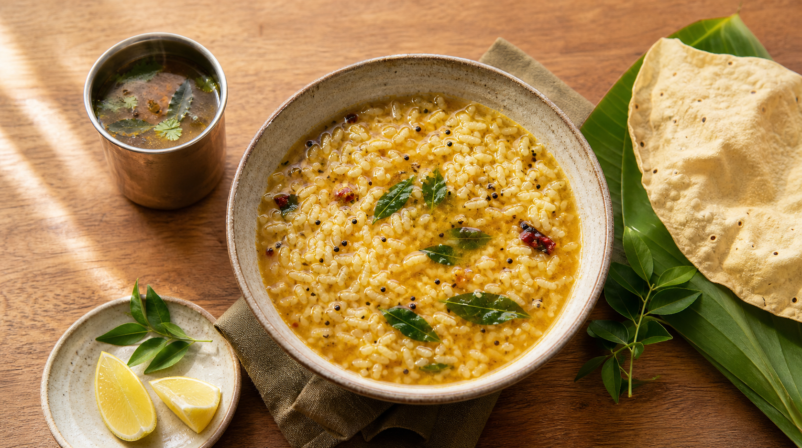

Rainy Day Rasam Rice
Tomato, tamarind, black pepper, cumin, curry leaves, steamed rice, and a spoon of ghee.

Comfort Food Edition
Rasam House serves bright, peppery South Indian bowls built for rainy evenings, long workdays, and anyone who needs food that knows how to be gentle.
Today's pot
This concept is part tiny restaurant, part recipe memory. Every detail is tuned for warmth: clear choices, readable contrast, keyboard-friendly controls, and a first screen that puts the food where it belongs.
The ritual
Steam first. Then the crackle of mustard seeds. Then curry leaves. Then rice soft enough to fold into the broth. Nothing here is fussy; the care is in the timing.
Mustard, cumin, dried chili, and curry leaves bloom in hot ghee.
Tamarind, tomato, pepper, and dal water turn into a bright broth.
Rice meets rasam just before serving, with papad on the side.
Build your bowl
Pick a spice level and garnish. The summary updates instantly, so the page feels alive without needing a backend.